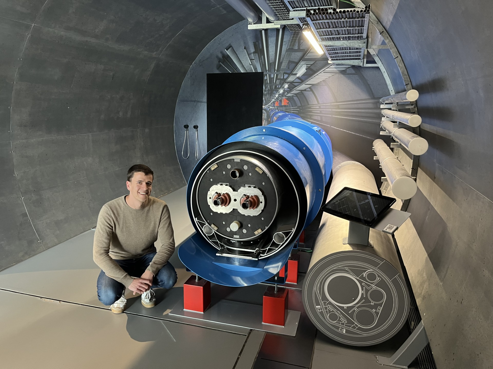

Julien Dular
FNRS - Post-Doctoral Researcher - Chargé de recherches

Projects
Life-HTS
Finite element models and workflows for high-temperature superconductors and electromagnetic devices.
Visit website ↗FiQuS
Electro-thermal simulation framework for modelling transients in superconducting accelerator magnets.
Visit website ↗HTS Homogenization & ROM
Reduced-order hysteretic models and homogenization methods for HTS windings and composite conductors.
View project →Main Publications
Highlighted peer-reviewed work. Full list on Google Scholar.
Loading publications…
Contact
I am open to collaborations, speaking invitations, and questions from prospective students and researchers. Feel free to reach out.